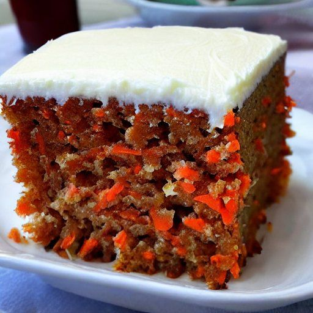

Gâteau aux carottes
Préparation: 15 minutes
Cuisson: 40 minutes
Total: 55 minutes
Ingrédients
-
2 1/2 t de farine tout usage

-
2 c. à thé de poudre à pâte
-
1 c. à thé de bicarbonate de soude
-
2 c. à thé de cannelle
-
1/2 c. à thé de sel
-
1 t d'huile végétale
-
2 t de sucre
-
4 oeufs
-
1 c. à thé d'extrait de vanille
-
3 t de carottes râpées
-
1/4 t de beurre mou
-
125 g de fromage à la crème
-
1 1/2 t de sucre à glacer
-
1/2 c. à thé d'extrait de vanille
Glaçage
Instructions
Dans un bol moyen, mélanger les ingrédients secs ensemble.
- 2 1/2 t de farine tout usage
- 2 c. à thé de poudre à pâte
- 1 c. à thé de bicarbonate de soude
- 2 c. à thé de cannelle
- 1/2 c. à thé de sel
Dans un grand bol, mélanger l'huile, le sucre, les œufs et la vanille.
- 1 t d'huile végétale
- 2 t de sucre
- 4 oeufs
- 1 c. à thé d'extrait de vanille
Incorporer les ingrédients secs aux ingrédients humides et ajouter 3 t de carottes râpées.
Mettre au four à 180 °C (350 °F) pendant environ 40 minutes.
Glaçage
Battre le beurre et le fromage.
- 1/4 t de beurre mou
- 125 g de fromage à la crème
Incorporer lentement le sucre à glacer et la vanille. Bien battre.
- 1 1/2 t de sucre à glacer
- 1/2 c. à thé d'extrait de vanille